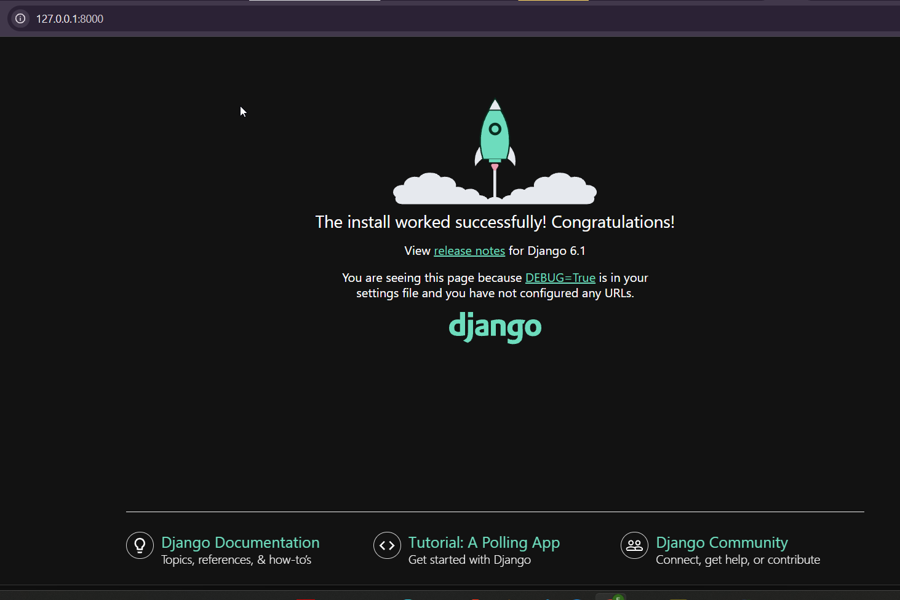
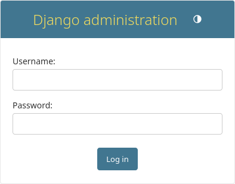

Getting Started with Django
Install python on your machine
- Ensure that python is properly installed
Creating First Django Project
Note
This part is following tutorial from official django page
In directory you want to work in run the following command:
Let’s look at what startproject created:
- Run
python manage.py runserverand ignore any warning about migration etc, You will have access to launch from a porthttp://127.0.0.1:8000/

Creating the Poll app
python manage.py startapp poll
directory structure:
Writing first View
from django.http import HttpResponse
def index(request):
return HttpResponse("Hello, world. You're at the polls index.")
To define a URLconf for the polls app, create a file polls/urls.py with the following content:
from django.urls import path
from . import views
urlpatterns = [
path("", views.index, name="index"),
]
Configure the root URLconf in the mysite project to include the URLconf defined in polls.urls. To do this, add an import for django.urls.include in mysite/urls.py and insert an include()
from django.contrib import admin
from django.urls import include, path
urlpatterns = [
path("polls/", include("polls.urls")),
path("admin/", admin.site.urls),
]
python manage.py runserver
Basic Database Setup
By default, the DATABASES configuration uses SQLite. If you’re new to databases, or you’re just interested in trying Django, this is the easiest choice. SQLite is included in Python, so you won’t need to install anything else to support your database.
Important Edit
While you’re editing mysite/settings.py, set TIME_ZONE to your time zone.
Creating Models
In our poll app, we’ll create two models: Question and Choice. A Question has a question and a publication date. A Choice has two fields: the text of the choice and a vote tally. Each Choice is associated with a Question.
from django.db import models
class Question(models.Model):
question_text = models.CharField(max_length=200)
pub_date = models.DateTimeField("date published")
class Choice(models.Model):
question = models.ForeignKey(Question, on_delete=models.CASCADE)
choice_text = models.CharField(max_length=200)
votes = models.IntegerField(default=0)
To include the app in our project, we need to add a reference to its configuration class in the INSTALLED_APPS setting. The PollsConfig class is in the polls/apps.py file, so its dotted path is 'polls.apps.PollsConfig'. Edit the mysite/settings.py file and add that dotted path to the INSTALLED_APPS setting. It’ll look like this:
INSTALLED_APPS = [
"polls.apps.PollConfig",
"django.contrib.admin",
"django.contrib.auth",
"django.contrib.contenttypes",
"django.contrib.sessions",
"django.contrib.messages",
"django.contrib.staticfiles",
]
python manage.py check; this checks for any problems in your project without making migrations or touching the database.
python manage.py shell
# No questions are in the system yet.
>>> Question.objects.all()
<QuerySet []>
# Create a new Question.
# Support for time zones is enabled in the default settings file, so
# Django expects a datetime with tzinfo for pub_date. Use timezone.now()
# instead of datetime.datetime.now() and it will do the right thing.
>>> from django.utils import timezone
>>> q = Question(question_text="What's new?", pub_date=timezone.now())
# Save the object into the database. You have to call save() explicitly.
>>> q.save()
# Now it has an ID.
>>> q.id
1
# Access model field values via Python attributes.
>>> q.question_text
"What's new?"
>>> q.pub_date
datetime.datetime(2012, 2, 26, 13, 0, 0, 775217, tzinfo=datetime.UTC)
# Change values by changing the attributes, then calling save().
>>> q.question_text = "What's up?"
>>> q.save()
# objects.all() displays all the questions in the database.
>>> Question.objects.all()
# <QuerySet [<Question: Question object (1)>]>
from django.db import models
class Question(models.Model):
# ...
def __str__(self):
return self.question_text
def was_published_recently(self):
return self.pub_date >= timezone.now() - datetime.timedelta(days=1)
class Choice(models.Model):
# ...
def __str__(self):
return self.choice_text
Note
In the Python Django shell, the equivalent of JavaScript's .includes() is the __contains or __icontains field lookup. To filter your query, you should use Question.objects.filter(question_text__icontains="you"). The Differences * __icontains (Recommended): This is case-insensitive. It will match "you", "You", "YOU", etc. * __contains: This is case-sensitive. It will only match the exact lowercase string "you".
Error Fixing
The error happens because get() can only return exactly one object.
Since there are 2 Question objects published in your current_year, Django throws a MultipleObjectsReturned exception.
Depending on what you actually want to do with those two questions, you have a few ways to fix this:
Option 1: Keep all matching records
If you want to look at or loop through all the questions published this year, swap .get() for .filter().
# Returns a QuerySet containing all matching questions
questions = Question.objects.filter(published_date__year=current_year)
Option 2: Get only the very first or latest record
If you only care about one specific question out of the duplicates, combine .filter() with .first() or .last(). This will safely return a single object (or None if none exist) without crashing.
# Gets the oldest one created this year
first_question = Question.objects.filter(published_date__year=current_year).first()
# Gets the newest one created this year (if ordered by date)
latest_question = Question.objects.filter(published_date__year=current_year).latest('published_date')
Option 3: Narrow down your search
If you truly only wanted one specific question, your search criteria is too broad. Add more specific fields inside .get() to pinpoint the exact row.
# Narrowing down by adding another unique field like title or id
question = Question.objects.get(published_date__year=current_year, id=1)
>>> ChoiceSelection.objects.filter(question__published_date__year=current_year)
# Delete a choiceselection
>>> c = q2.choiceselection_set.filter(choice_text__icontains="Nacking")
>>> c.delete()
# (1, {'poll.ChoiceSelection': 1})
>>> q2.choiceselection_set.all()
# <QuerySet [
# <ChoiceSelection: choice: Not Much votes: 0>,
# <ChoiceSelection: choice: Too Much votes: 0>,
# <ChoiceSelection: choice: the Sky votes: 0>,
# ]>
Creating admin SuperUser
First we’ll need to create a user who can login to the admin site. Run the following command:
python manage.py createsuperuser
Username: admin
# You will then be prompted for your desired email address:
Email address: admin@example.com
password: ******

Make the poll app modifiable in the admin
from django.contrib import admin
from .models import Question
admin.site.register(Question)
Loading HTML template
from django.shortcuts import get_object_or_404, render
from .models import Question
def index(request):
latest_question_list = Question.objects.order_by("-pub_date")[:5]
context = {"latest_question_list": latest_question_list}
return render(request, "polls/index.html", context)
def detail(request, question_id):
question = get_object_or_404(Question, pk=question_id)
return render(request, "polls/detail.html", {"question": question})
Use the template system
<h1>{{ question.question_text }}</h1>
<ul>
{% for choice in question.choice_set.all %}
<li>{{ choice.choice_text }}</li>
{% endfor %}
</ul>
Removing hardcoded URLs in templates with Namespaces
To avoid clashing on names when you have alot of apps in your project, we introduces namespace into ur poll/urls.py
from django.urls import path
from . import views
app_name = "polls"
urlpatterns = [
path("", views.index, name="index"),
path("<int:question_id>/", views.detail, name="detail"),
path("<int:question_id>/results/", views.results, name="results"),
path("<int:question_id>/vote/", views.vote, name="vote"),
]
Now change your polls/index.html template from:
to point at the namespaced detail view:
Writing Minimal Form
<form action="{% url 'polls:vote' question.id %}" method="post">
{% csrf_token %}
<fieldset>
<legend><h1>{{ question.question_text }}</h1></legend>
{% if error_message %}<p><strong>{{ error_message }}</strong></p>{% endif %}
{% for choice in question.choice_set.all %}
<input type="radio" name="choice" id="choice{{ forloop.counter }}" value="{{ choice.id }}">
<label for="choice{{ forloop.counter }}">{{ choice.choice_text }}</label><br>
{% endfor %}
</fieldset>
<input type="submit" value="Vote">
</form>
based on the url path {route} we created prior"
We will create , we will create a real update on vote:
from django.db.models import F
from django.http import HttpResponse, HttpResponseRedirect
from django.shortcuts import get_object_or_404, render
from django.urls import reverse
from .models import Choice, Question
# ...
def vote(request, question_id):
question = get_object_or_404(Question, pk=question_id)
try:
selected_choice = question.choice_set.get(pk=request.POST["choice"])
except (KeyError, Choice.DoesNotExist):
# Redisplay the question voting form.
return render(
request,
"polls/detail.html",
{
"question": question,
"error_message": "You didn't select a choice.",
},
)
else:
selected_choice.votes = F("votes") + 1
selected_choice.save()
# Always return an HttpResponseRedirect after successfully dealing
# with POST data. This prevents data from being posted twice if a
# user hits the Back button.
return HttpResponseRedirect(reverse("polls:results", args=(question.id,)))
After somebody votes in a question, the vote() view redirects to the results page for the question. Let’s write that view:
from django.shortcuts import get_object_or_404, render
def results(request, question_id):
question = get_object_or_404(Question, pk=question_id)
return render(request, "polls/results.html", {"question": question})
Now, create a polls/results.html template:
<h1>{{ question.question_text }}</h1>
<ul>
{% for choice in question.choice_set.all %}
<li>{{ choice.choice_text }} -- {{ choice.votes }} vote{{ choice.votes|pluralize }}</li>
{% endfor %}
</ul>
<a href="{% url 'polls:detail' question.id %}">Vote again?</a>
Use generic views: Less code is better
These views represent a common case of basic web development: getting data from the database according to a parameter passed in the URL, loading a template and returning the rendered template. Because this is so common, Django provides a shortcut, called the “generic views” system.
Generic views abstract common patterns to the point where you don’t even need to write Python code to write an app. For example, the ListView and DetailView generic views abstract the concepts of “display a list of objects” and “display a detail page for a particular type of object” respectively.
Amend URLconf
from django.urls import path
from . import views
app_name = "polls"
urlpatterns = [
path("", views.IndexView.as_view(), name="index"),
path("<int:pk>/", views.DetailView.as_view(), name="detail"),
path("<int:pk>/results/", views.ResultsView.as_view(), name="results"),
path("<int:question_id>/vote/", views.vote, name="vote"),
]
<question_id>to <pk>. This is necessary because we’ll use the DetailView generic view to replace our detail() and results() views, and it expects the primary key value captured from the URL to be called "pk".
Amend views
from django.db.models import F
from django.http import HttpResponseRedirect
from django.shortcuts import get_object_or_404, render
from django.urls import reverse
from django.views import generic
from .models import Choice, Question
class IndexView(generic.ListView):
template_name = "polls/index.html"
context_object_name = "latest_question_list"
def get_queryset(self):
"""Return the last five published questions."""
return Question.objects.order_by("-pub_date")[:5]
class DetailView(generic.DetailView):
model = Question
template_name = "polls/detail.html"
class ResultsView(generic.DetailView):
model = Question
template_name = "polls/results.html"
def vote(request, question_id):
# same as above, no changes needed.
...
Handling Multi-Context Example code
-
View Example: Here is how you inject multiple context objects into your specific
IndexView. You will override theget_context_datamethod, callsuper(), and add your extra data to the context dictionaryfrom django.views import generic from .models import Question, Category # Assuming you have another model like Category class IndexView(generic.ListView): template_name = "polls/index.html" context_object_name = "latest_question_list" def get_queryset(self): """Return the last five published questions.""" return Question.objects.order_by("-pub_date")[:5] def get_context_data(self, **kwargs): # 1. Get the existing context (which already contains latest_question_list) context = super().get_context_data(**kwargs) # 2. Add your additional context objects here context["all_categories"] = Category.objects.all() context["featured_poll"] = Question.objects.filter(is_featured=True).first() # 3. Return the updated context dictionary return context -
How the Html will look now
poll/templates/polls/index.html<!-- Primary context from ListView --> <h2>Latest Questions</h2> <ul> {% for question in latest_question_list %} <li>{{ question.question_text }}</li> {% endfor %} </ul> <!-- Additional context added via get_context_data --> <h2>Poll Categories</h2> <ul> {% for category in all_categories %} <li>{{ category.name }}</li> {% endfor %} </ul>
Each generic view needs to know what model it will be acting upon. This is provided using either the model attribute (in this example, model = Question for DetailView and ResultsView) or by defining the get_queryset() method (as shown in IndexView).
By default, the DetailView generic view uses a template called <app name>/<model name>_detail.html. In our case, it would use the template "polls/question_detail.html". The template_name attribute is used to tell Django to use a specific template name instead of the autogenerated default template name. We also specify the template_name for the results list view – this ensures that the results view and the detail view have a different appearance when rendered, even though they’re both a DetailView behind the scenes.
Similarly, the ListView generic view uses a default template called <app name>/<model name>_list.html; we use template_name to tell ListView to use our existing "polls/index.html" template.
In previous parts of the tutorial, the templates have been provided with a context that contains the question and latest_question_list context variables.
For DetailView the question variable is provided automatically – since we’re using a Django model (Question), Django is able to determine an appropriate name for the context variable. (In my own actual case, I have to create a new context_object_name=q for DetailView and ResultView since I am using q as context name)
class DetailView(generic.DetailView):
model = Question
template_name = "polls/detail.html"
context_object_name = "q"
class ResultsView(generic.DetailView):
model = Question
template_name = "polls/results.html"
context_object_name = "q"
However, for ListView, the automatically generated context variable is question_list.
To override this we provide the context_object_name attribute, specifying that we want to use latest_question_listinstead. As an alternative approach, you could change your templates to match the new default context variables – but it’s a lot easier to tell Django to use the variable you want.